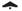
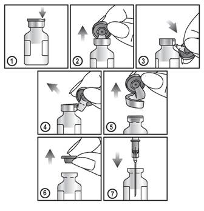

RÉSUMÉ DES CARACTÉRISTIQUES DU PRODUIT
ANSM - Mis à jour le : 27/05/2010
CUROSURF 120 mg/1,5 ml, suspension pour instillation endotrachéobronchique
2. COMPOSITION QUALITATIVE ET QUANTITATIVE
Poractant alfa* .............................................................................................................................. 120,0 mg
Pour un flacon.
* Extrait de poumon de porc composé de 99% de lipides polaires (principalement des phospholipides), en particulier de la phosphatidylcholine (environ 70% de la teneur totale en phospholipides) et d'environ 1% de protéines hydrophobes de bas poids moléculaire (SP-B et SP-C).
Pour la liste complète des excipients, voir rubrique 6.1.
Suspension pour instillation endotrachéobronchique.
4.1. Indications thérapeutiques
Traitement des nouveau-nés prématurés à haut risque de présenter ou présentant un syndrome de détresse respiratoire (SDR) par déficit en surfactant pulmonaire (maladie des membranes hyalines).
4.2. Posologie et mode d'administration
Posologie
Chez les prématurés à haut risque de développer un syndrome de détresse respiratoire aigu par déficit en surfactant et dont l'état fonctionnel respiratoire nécessite une intubation, la dose initiale est de 200 mg/kg. Elle doit être administrée le plus tôt possible, préférablement dans les 30 premières minutes de vie.
Chez les prématurés présentant un syndrome de détresse respiratoire par déficit en surfactant, la dose initiale recommandée est de 200 mg/kg en administration unique, le plus tôt possible après la naissance, dès que le diagnostic de syndrome de détresse respiratoire est posé.
Une dose supplémentaire de 100 mg/kg peut être administrée 6 à 12 heures après la première dose à des nouveau-nés présentant des signes persistants de syndrome de détresse respiratoire et restant sous assistance ventilatoire.
La dose totale cumulée ne doit pas dépasser 400 mg/kg.
Mode d'administration
Curosurf se présente sous deux dosages (240 mg et 120 mg) dans un flacon prêt à l'emploi qui doit être stocké au réfrigérateur (2°C et 8°C).
Le flacon doit être réchauffé jusqu'à 37°C avant l'utilisation et agité doucement de haut en bas afin d'obtenir une suspension uniforme.
La suspension doit être extraite du flacon au moyen d'une aiguille fine et d'une seringue stériles, puis instillée soit en dose unique directement dans la trachée basse, soit en deux demi-doses: une moitié dans la bronche principale droite et l'autre moitié dans la bronche principale gauche.
Après instillation, il est nécessaire de ventiler l'enfant manuellement pendant une période courte (à peu près 1 minute) en utilisant le même mélange d'oxygène que celui utilisé avant le traitement, afin de permettre une distribution uniforme.
Puis l'enfant peut être reconnecté à un ventilateur dont le mélange sera ajusté en fonction de l'état clinique et des analyses des gaz du sang. Les enfants qui ne requièrent plus de ventilation assistée devront être extubés après l'administration de surfactant.
Sans objet.
4.4. Mises en garde spéciales et précautions d'emploi
Mises en garde spéciales
Curosurf ne doit être administré que par des praticiens entraînés et expérimentés dans les soins et la réanimation des enfants prématurés.
Curosurf ne doit être administré qu'à des enfants intubés en ventilation mécanique sous surveillance constante de leur oxymétrie par mesure de la PO2 par électrode transcutanée.
Les enfants nés après une rupture très prolongée des membranes (plus de 3 semaines) peuvent ne pas présenter une réponse optimale au traitement du fait de l'hypoplasie pulmonaire souvent associée.
Précautions particulières d'emploi
Il est recommandé de pratiquer une radiographie pulmonaire, afin de vérifier la bonne position de la sonde intratrachéale et l'absence de pneumothorax.
L'administration de Curosurf nécessite un contrôle rigoureux et permanent des constantes de ventilation et d'oxygénation.
Du fait des propriétés tensioactives du Curosurf, l'expansion thoracique peut augmenter rapidement après l'administration du produit, ce qui nécessite une diminution rapide de la pression respiratoire maximale de ventilation.
L'amélioration de la mécanique pulmonaire provenant du traitement par Curosurf peut entraîner une augmentation rapide de la pression partielle d'oxygène dans le sang artériel et donc nécessiter une diminution rapide de la concentration de l'oxygène inspiré, afin d'éviter une hyperoxie dont les dangers, en particulier rétiniens, sont redoutables chez les prématurés (risques de cécité).
4.5. Interactions avec d'autres médicaments et autres formes d'interactions
Sans objet.
Sans objet.
4.7. Effets sur l'aptitude à conduire des véhicules et à utiliser des machines
Sans objet.
Les effets secondaires rarement rapportés ont été: hémorragie pulmonaire, perturbations hémodynamiques (bradycardie, hypotension, hémorragie intra-crânienne), désaturation transitoire). Dans le contexte de prématurité, le lien de causalité entre Curosurf et l'effet rapporté n'a pas toujours été clairement établi.
Les effets d'un surdosage ne sont pas encore connus. Cependant, il est tout à fait déconseillé d'administrer une dose totale supérieure à 400 mg/kg.
En cas de surdosage accidentel, la suspension devra être aspirée et l'enfant sera mis sous surveillance toute particulière en ce qui concerne la balance lipidique et électrolytique.
5. PROPRIETES PHARMACOLOGIQUES
5.1. Propriétés pharmacodynamiques
Classe pharmacothérapeutique: SURFACTANT PULMONAIRE SEMI-NATUREL, Code ATC: R07AA02.
Le surfactant pulmonaire est un mélange de substances, principalement des phospholipides et des protéines spécifiques qui tapissent la surface interne des alvéoles, capable d'abaisser la tension de surface pulmonaire.
Cette capacité à abaisser la tension de surface pulmonaire est essentielle pour stabiliser les alvéoles et éviter leur collapsus en fin d'expiration, permettant des échanges gazeux adéquats tout au long du cycle ventilatoire.
5.2. Propriétés pharmacocinétiques
On ne dispose d'aucune donnée de pharmacocinétique humaine, du fait des barrières éthiques et techniques s'étant opposées à l'obtention de telles données chez des enfants prématurés.
5.3. Données de sécurité préclinique
Sans objet.
Chlorure de sodium, eau pour préparations injectables.
En l'absence d'études de compatibilité, ce médicament ne doit pas être mélangé avec d'autres médicaments.
18 mois.
Après ouverture: le produit doit être utilisé immédiatement.
6.4. Précautions particulières de conservation
A conserver au réfrigérateur (entre 2°C et 8°C), à l'abri de la lumière.
Pendant sa durée de conservation, le produit peut être sorti du réfrigérateur pour une période de 24 heures maximum à une température ne dépassant pas 25°C. A la fin de cette période, le flacon de CUROSURF non utilisé, non ouvert peut être remis au réfrigérateur pour un usage ultérieur.
Ce flacon ne peut être remis au réfrigérateur plus d'une fois. Après la deuxième sortie du réfrigérateur, le produit devra être utilisé dans les 24 heures ou être jeté.
La date et heure de sortie du réfrigérateur doivent être enregistrées sur l'emballage extérieur.
6.5. Nature et contenu de l'emballage extérieur
1,5 ml de suspension en flacon (verre) muni d'un bouchon en caoutchouc chlorobutyl - boîte de 1.
6.6. Précautions particulières d’élimination et de manipulation
Avant utilisation, le flacon doit être amené à 37°C, puis agité doucement de haut en bas afin d'obtenir une suspension uniforme.
La suspension doit être extraite du flacon au moyen d'une aiguille et d'une seringue stérile.
Afin d'extraire la suspension, respecter les instructions ci-dessous:
1. Repérer l'encoche (FLIP UP) sur la capsule en plastique colorée.
2. Soulever l'encoche et tirer vers le haut.
3. Soulever la capsule en plastique et tirer la partie d'aluminium vers le bas.
4. et 5. Oter l'ensemble de l'anneau en tirant sur l'aluminium.
6. et 7. Oter la capsule de caoutchouc afin d'extraire le contenu.
Pour usage unique seulement.

Tout produit non utilisé ou déchet doit être éliminé conformément à la réglementation en vigueur.
7. TITULAIRE DE L’AUTORISATION DE MISE SUR LE MARCHE
CHIESI SA
11, AVENUE DUBONNET
92400 COURBEVOIE
8. NUMERO(S) D’AUTORISATION DE MISE SUR LE MARCHE
· 557 752-0 ou 34009 557 752 0 1: 1,5 ml de suspension en flacon (verre) muni d'un bouchon en caoutchouc chlorobutyl - boîte de 1.
·
9. DATE DE PREMIERE AUTORISATION/DE RENOUVELLEMENT DE L’AUTORISATION
[à compléter par le titulaire]
10. DATE DE MISE A JOUR DU TEXTE
[à compléter par le titulaire]
Sans objet.
12. INSTRUCTIONS POUR LA PREPARATION DES RADIOPHARMACEUTIQUES
Sans objet.
Liste I.
Médicament réservé à l'usage hospitalier.
Prescription réservée aux unités de soins intensifs en néonatologie.